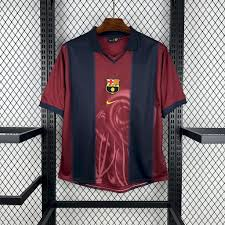

Camisetas
HERMOSA CAMISETA DEL BARCELONA ANTIGUA

price :345.000
tallas: xs,s,m,l,xl,xxl
Balones
HERMOSO BALON DE LA CHAMPIONS LEAGUE

Precio :899.950
tamaño :INFANTIL, GRANDE
Guayos
HERMOSOS GUAYOS DE LIONEL MESSI
HERMOSA CAMISETA DEL BARCELONA ANTIGUA

HERMOSO BALON DE LA CHAMPIONS LEAGUE
HERMOSOS GUAYOS DE LIONEL MESSI
Tipo de inventario: pedido completo Temporadas adecuadas: verano, invierno, primavera, otoño Género aplicable: neutral/Tanto para hombres como para mujeres Grupo de edad aplicable: adultos ¿Se trata de comercio exterior? Sin patrón: estampado Nombre de la tela: fibra de poliéster Composición del tejido: fibra de poliéster (poliéster) Contenido de la composición del tejido: 100 Nombre del forro: fibra de poliéster Composición del forro: fibra de poliéster (poliéster) Contenido de la composición del forro: 100 Escenarios aplicables: correr, fútbol, baloncesto y voleibol
El nuevo balón de la Champions League 2024-25 es un espectáculo visual. Sus vibrantes colores y diseño innovador prometen una experiencia de juego única. Con tecnología de última generación, este esférico garantiza un vuelo preciso y un toque excepcional. El balón oficial de la UEFA Champions League 2024-25 presenta un diseño vanguardista que combina elementos clásicos del torneo con detalles modernos. Su superficie texturizada proporciona un agarre óptimo en cualquier condición climática, mientras que su núcleo de alta densidad asegura un rebote consistente y predecible. La cámara de aire de butilo garantiza una retención de aire superior, manteniendo el balón en perfectas condiciones durante todo el partido. Siente la emoción de la Champions League con cada toque de este balón excepcional. Su diseño inspirador y su rendimiento inigualable te transportarán al corazón de la competición. Este balón no es solo un objeto deportivo, es un símbolo de pasión y excelencia.
Los Guayos Adidas Messi F50 para Niños son la elección perfecta para los pequeños futbolistas que buscan rendimiento y estilo en el campo. Diseñados con un material de cuero sintético, ofrecen una comodidad excepcional y un ajuste seguro, permitiendo que los niños se concentren en su juego sin distracciones. La suela SG (Soft Ground) está especialmente diseñada para césped natural, proporcionando un agarre óptimo en condiciones húmedas y resbaladizas. Esto permite que los jóvenes atletas realicen movimientos rápidos y precisos, mejorando su desempeño en cada partido. El modelo cuenta con un cierre de cordones que asegura un ajuste personalizado, adaptándose a los pies en crecimiento de los niños. Con un diseño que rinde homenaje a la leyenda del fútbol Lionel Messi, estos guayos no solo son funcionales, sino que también inspiran a los jóvenes a alcanzar sus sueños en el deporte. Ideal para entrenamientos y partidos, los Guayos Adidas Messi F50 son una inversión en la pasión y el talento de los futuros campeones. Equipar a los niños con este calzado es darles la oportunidad de jugar con confianza y estilo, mientras desarrollan sus habilidades en el fútbol. Sin garantía